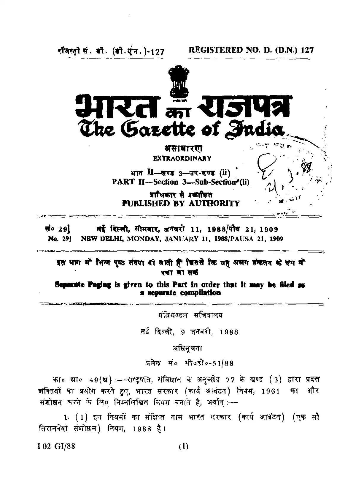
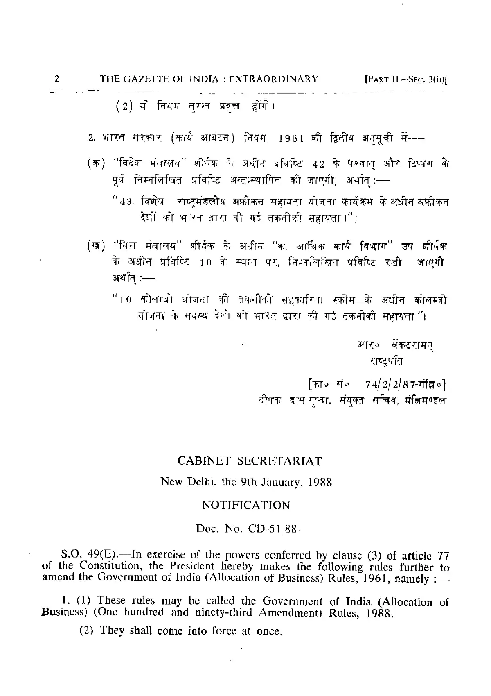
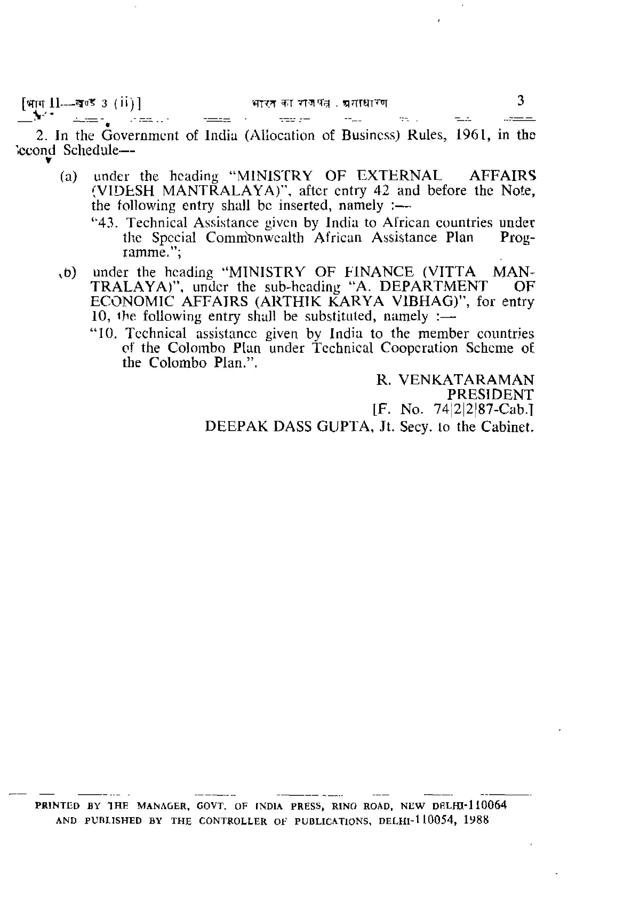

Amendment #193 (S.O. 49(E), 1988)
2 changes: 0 to the First Schedule, 2 to the Second Schedule. 1 applied1 not applied
The order, page by page
Page 1 of 4

Page 2 of 4

Page 3 of 4

12after Schedule 2 › MINISTRY OF EXTERNAL AFFAIRS › entry 42
- 43. Technical Assistance given by India to African countries under the Special Commonwealth African Assistance Plan Programme.
not applied (the change could not be placed in the Rules as read; see How this document was read)
Schedule 2 › MINISTRY OF FINANCE › DEPARTMENT OF ECONOMIC AFFAIRS › entry 10
- 10. Technical assistance given by India to the member countries of the Colombo Plan under Technical Cooperation Scheme of the Colombo Plan.
applied at schedule 2 › ministry MINISTRY OF FINANCE › department A › group_heading II › entry 10 in the Rules after #193
Page 4 of 4
How this document was read
Known issues
| Change | Issue | Known as |
|---|---|---|
| 1 | change 1: 2 parts are entry 42 under schedule 2 › ministry MINISTRY OF EXTERNAL AFFAIRS | A number twice |
From the Government of India (Allocation of Business) Rules, 1961 and their amendments, as published by the Cabinet Secretariat (cabsec.gov.in), read by orgpedia. The readings of the older scanned gazettes have known gaps.